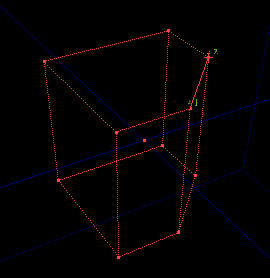

Brush Clipping
![[button.mode.clip]](images/button-mode-clip.gif) |
Brush clipping mode is a tool for changing the shape of brushes. You can think of it as attacking a brush with a knife or a cheese slicer. It can:
|
Overview
The clipping tool is handy for trimming multiple brushes at once, or sometimes slicing up a brush that can't stick out at all. Basically all you do is select the clipping tool, hold Ctrl, and click on two vertices to place the two 'pins'. Then grab the pins and move them wherever you want to create your cutting plane. The side with the little tick (T) on it is the side that gets cut off. You can use the flip button to reverse the tick (uber handy - just get the pins where you want and flip the thingy until its right). The cut button is what you press to actually lop off part of the brush.
The split button will cut one brush into two separate brushes, this will not work on the builder brush itself, but will work on any other brush already placed in the level. The delete button just gets rid of the pins.
Uses
- making ramps
- trimming brushes
- splitting brushes to split surfaces
Basic 2D clipping
The basic steps of using this tool:
- select the brush you want to clip
- select the tool in the toolbox
- CTRL + right-click in an orthogonal viewport to add a pin: you need 2.
- Move the pins as you would normal actors: then red line between them is the clip line. The tick mark on the midpoint points toward the part to discard when clipping.
- Clip or split: the commands are in UnrealEd Main Menu → Brush → Brush Clip and in the 2nd toolbox group.
3D clipping
3D clipping is for when the part that needs removing does not line up with the top, side, or front views.
Example

|
If you built a cube, 256x256x256 units in size, and then placed two clip markers (pins) in the top view, 128 units in from one of the corners. Clipping this brush will result in a cube that is missing one edge - the top and bottom faces both having five sides, with five other vertical faces in between. Two of the original corners (vertices) of the cube will have been cut away. Now lets say you build another cube of the same size, but only want to remove one of the corners. None of the 2D viewports are looking in the correct direction, because the corner needs a cut that is slanted in all three dimensions. You need 3D clipping. |
How to do 3D clipping
To do 3D clipping, add a third clip marker:
- CTRL + Right-Click on one of the 2D viewports as before.
- Move the third clip marker to the desired position.
- Look in the 3D view and make sure the tick mark (called the 'normal') is facing towards the part you want to cut away.
- (If you are splitting the brush to make two brushes, the normal does not matter.)
- Select the brush you want to clip in any viewport.
- Click the cut button.
Note, with 2D clipping, it is important which viewport you use. Clipping is always done by a plane - think of it as a large blade. If you use the top view, the blade will cut straight down on the line connecting the two pins. If you use the side view, the blade cuts sideways. You can do diagonal cuts in 2D, but they will only slope one way - as you look at them in 2D. In 3D, three points are enough to define any plane, and so if you have three pins, UnrealEd performs a 3D clip no matter what view port you are in.
Example
To cut one corner from a 256x256x256 cube, add two clip markers like before, then add a third, and place it 128 units DOWNWARDS from the corner. Check their positions in all the views, check the normal is facing the right way, then hack off your corner! |
Uses
3D clipping can be used to create complex shapes, and is especially useful for shaving bits off cubes to make boulder shapes and rock formations.
Troubleshooting
If you have problems clipping/cutting a brush:
- Make sure the brush you want to clip is selected.
- If you have recently moved the brush, rebuild geometry before clipping.
- the red builder brush can't be split, only clipped.
- Clipping sometimes either doesnt work at all or clips in the wrong place: this is to do with the brush's current scaling or rotation.
- To solve this, transform the brush permanently by doing Brush Context Menu → Transform → Transform Permanently
- saving the map wipes the clipping points
Related Topics
- Reference for the Toolbox
- UnrealEd interface
- Architecture topics
- Making Ramps